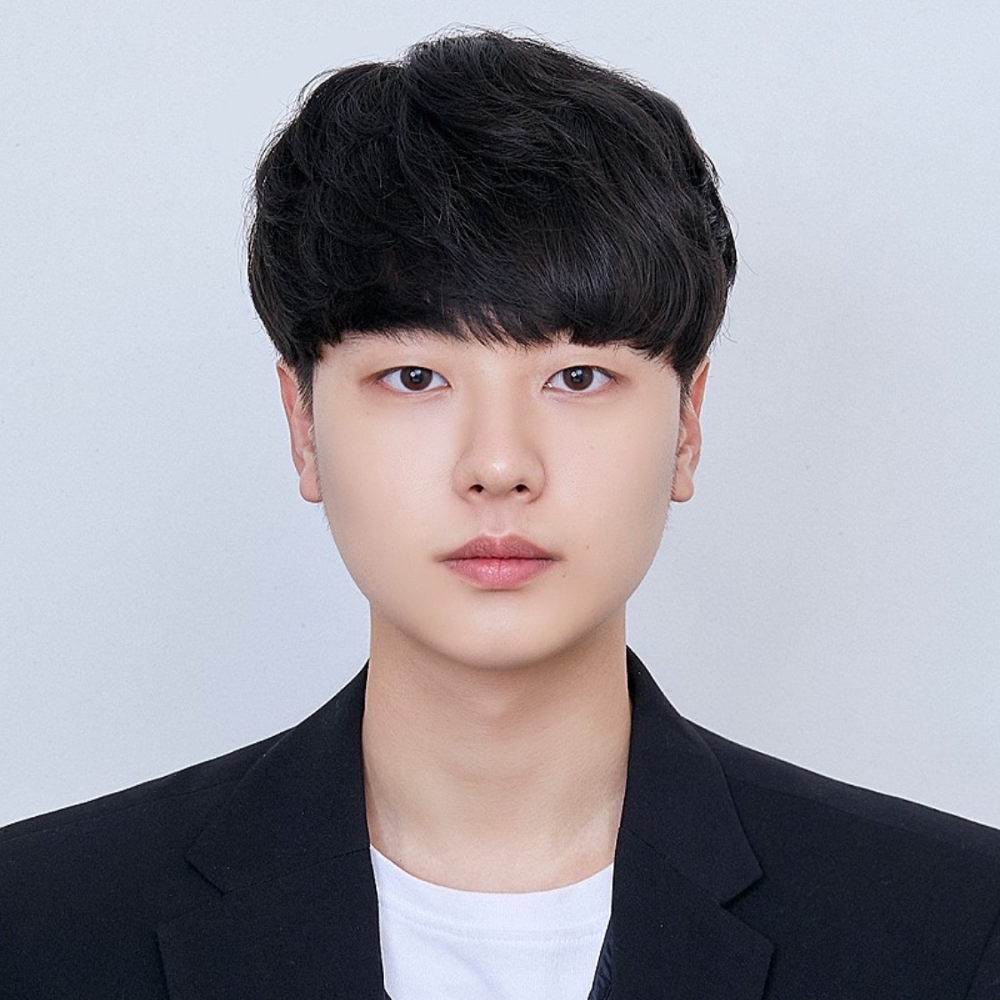

간단한 자기소개


안녕하세요! 동의대학교에 재학중인 이성민입니다.
개발자가 되기 전부터 몰입하는 즐거움을 따라 살다가, 지금은 개발에 푹 빠져 있습니다.
무엇보다도 꾸준함의 진짜 가치를 알기에 하루에 공부의 양을 정해놓고 계획적으로 공부하며
목표로한 프로젝트를 완성시키기 위하여 노력하고 있습니다.Clean Code와 Codeing에 대한 고민을 생활화합니다.